Career guides that get you shortlisted
Honest, practical advice on CVs, LinkedIn, Europass, job portals, portfolios and interviews.
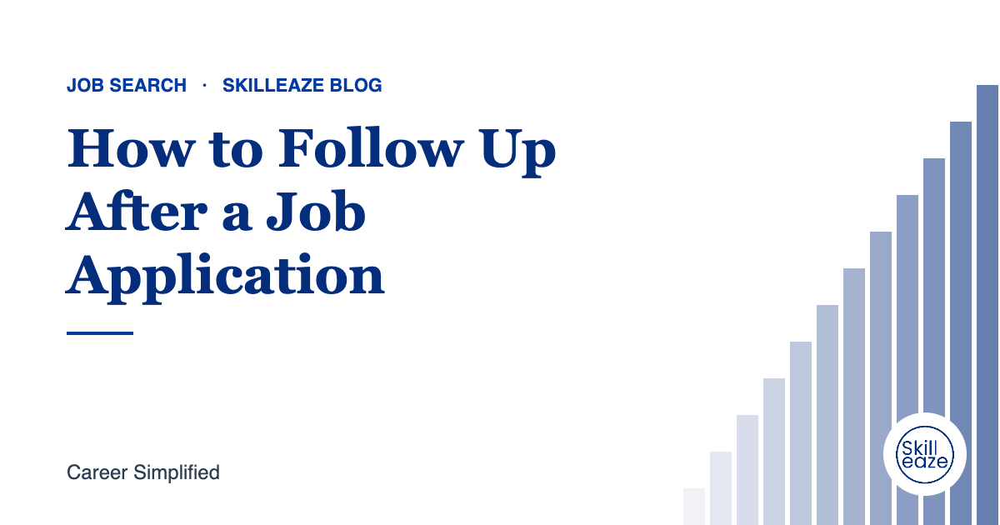
How to Follow Up After a Job Application
When to follow up, what to write, and how to stay professional without being pushy.

ATS CV Format for UAE Jobs in 2026
The layout, sections and personal details UAE recruiters expect, and how to keep your CV readable by applicant tracking systems.
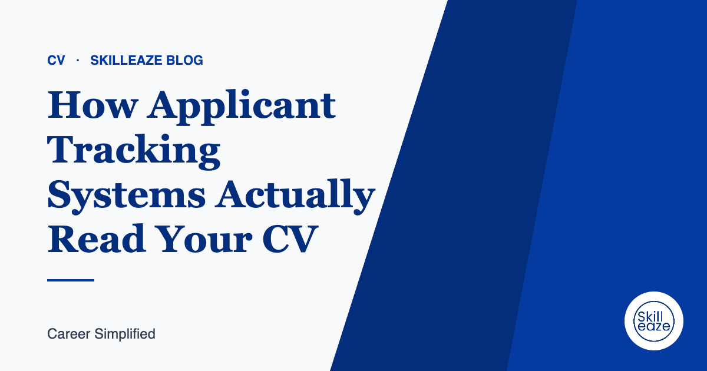
How Applicant Tracking Systems Actually Read Your CV
What an ATS does with your file, why good candidates get filtered out, and simple fixes that help.
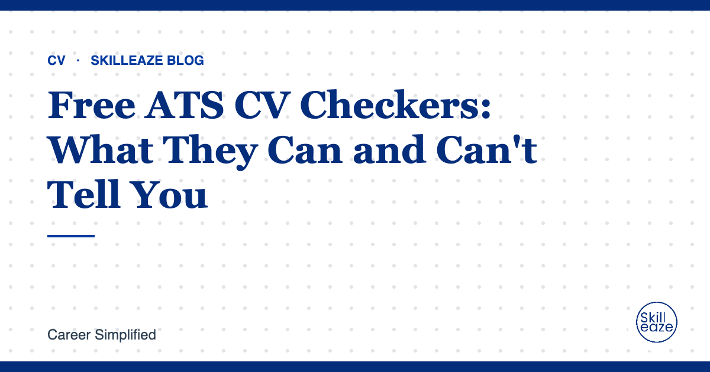
Free ATS CV Checkers: What They Can and Can't Tell You
Free checkers are useful for spotting formatting problems. Here is how to read their scores and when you need more than a scan.

CV for Freshers in India: What Recruiters Look For
How to build a strong first CV from education, projects, internships and skills.
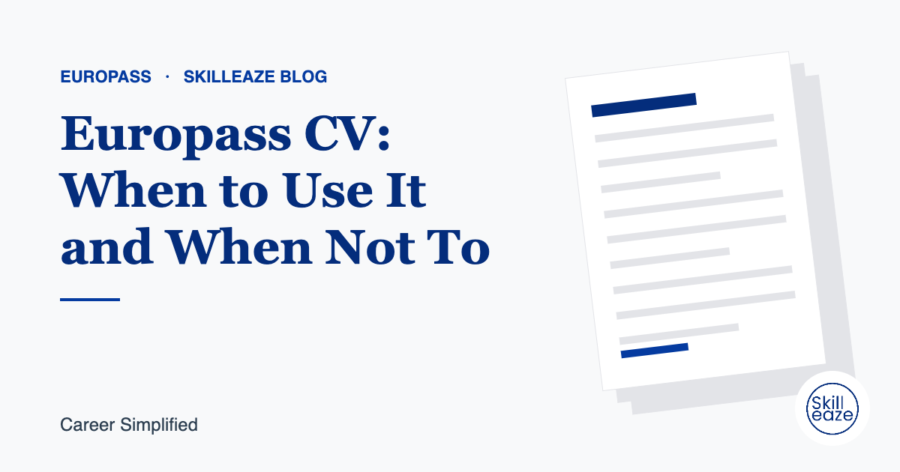
Europass CV: When to Use It and When Not To
The Europass format helps in some European applications but not all. Here is how to decide.

Europass CV for Jobs in Germany
What German employers check on a CV, and how to present your qualifications and language skills.
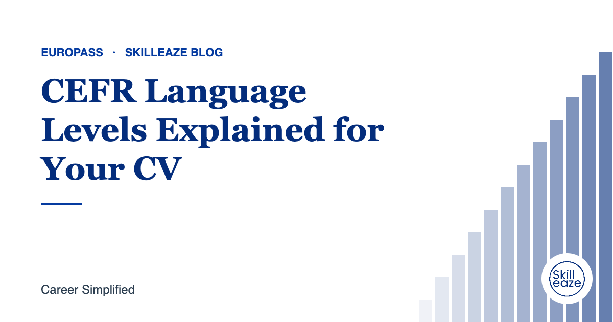
CEFR Language Levels Explained for Your CV
How to describe your language skills correctly using A1 to C2.

LinkedIn Headline Formulas Recruiters Actually Search For
Simple headline structures that make your profile easier to find and understand.

How to Write a LinkedIn About Section That Works
A simple structure for an About section that tells your story and helps recruiters find you.
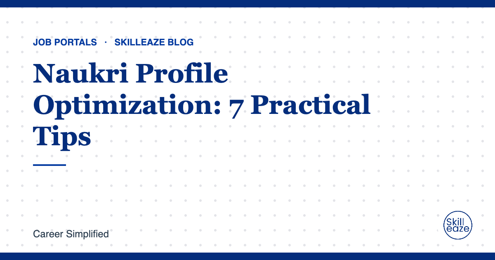
Naukri Profile Optimization: 7 Practical Tips
How to make your Naukri profile complete, current and easier for recruiters to find.

Bayt and Naukrigulf Profile Tips for Gulf Jobs
How to set up your profiles for recruiters hiring across the UAE, Saudi Arabia, Qatar and the wider GCC.
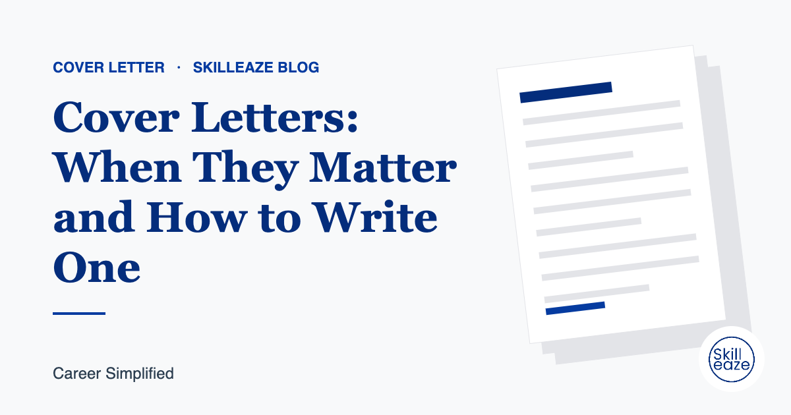
Cover Letters: When They Matter and How to Write One
A short guide to writing a cover letter that adds value instead of repeating your CV.

Turn Duties Into Achievements on Your CV
Simple ways to rewrite responsibilities so recruiters see your impact.

CV Mistakes That Quietly Cost You Interviews
Common problems that make recruiters move on, and how to fix them.
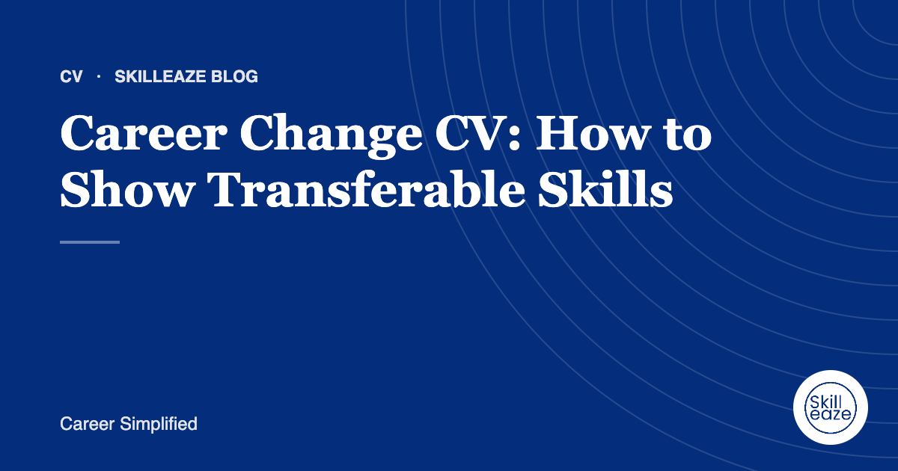
Career Change CV: How to Show Transferable Skills
How to present your experience when moving into a new industry or role.
Who Needs a Personal Portfolio Website?
When a portfolio helps your job search, and what it should include.
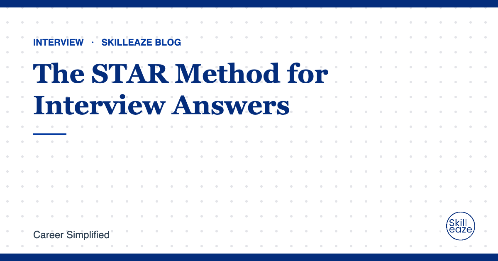
The STAR Method for Interview Answers
A simple structure for answering behavioural interview questions clearly.
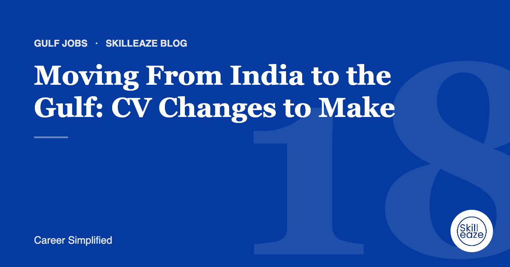
Moving From India to the Gulf: CV Changes to Make
What to adjust when applying for jobs in the UAE, Saudi Arabia, Qatar and the wider GCC from India.
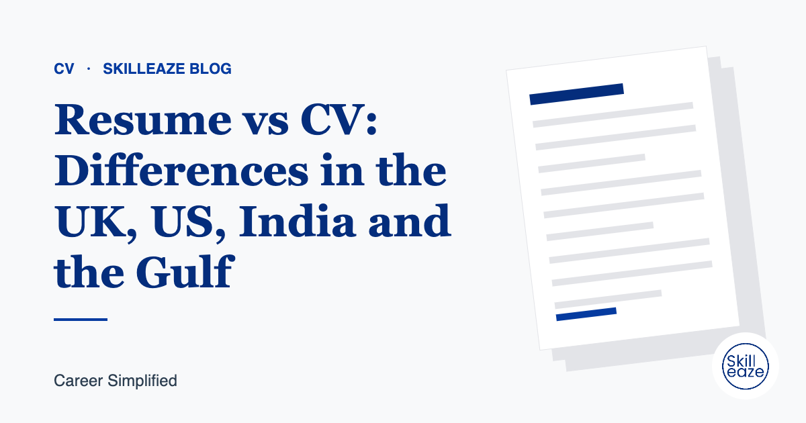
Resume vs CV: Differences in the UK, US, India and the Gulf
How expectations change by country, so your document fits where you apply.

AI Resume Builders: Pros, Risks and How to Use Them Safely
What AI tools are good at, where they go wrong, and how to keep your CV accurate.
Prefer it done for you?
Talk to our expert on WhatsApp. Price confirmed before you pay.
 Chat on WhatsApp
Chat on WhatsApp